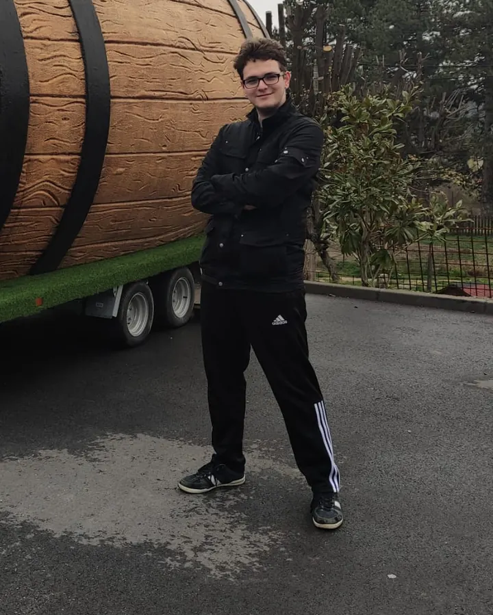
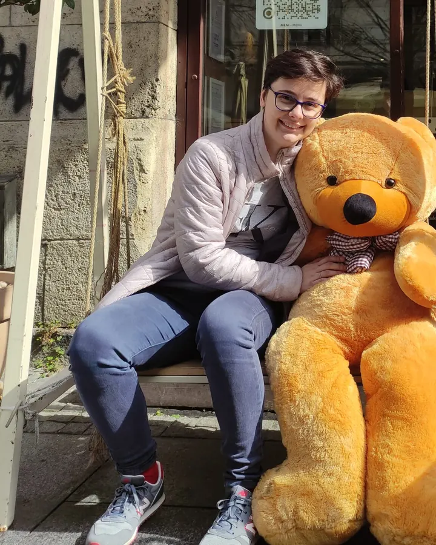
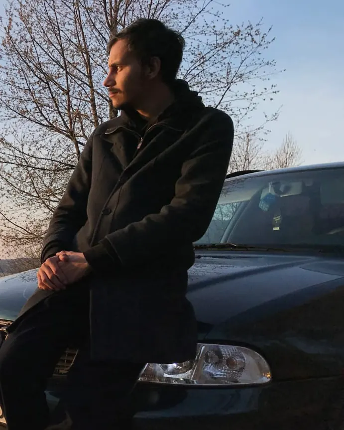

O nás
Mladí ľudia, ktorí menia východné Slovensko.
Mladá Vlna je mládežnícke občianske združenie so sídlom v Prešove. Pomáhame mladým ľuďom byť aktívni vo vlastnej komunite, v Košiciach, Prešove aj v ich okolí.
Kto sme
Zmena začína tam, kde žiješ.
Preto pracujeme s mladými ľuďmi na východnom Slovensku: staráme sa o miesto, kde žijeme, učíme sa spolu nové zručnosti a sme tu jeden pre druhého.
Niektoré aktivity robíme vlastnými silami, iné s podporou programu Erasmus+, vždy spolu s partnermi doma aj v zahraničí. Spájame mladých z rôznych miest a krajín, aby sa navzájom inšpirovali.
Vytvárame príležitosti pre mladých, študentov, pracovníkov s mládežou aj širokú verejnosť zapojiť sa do medzinárodných projektov, výmen a školení. Veríme v silu vzdelávania a medzikultúrnej spolupráce: účastníci si rozvíjajú kľúčové kompetencie, kreatívne myslenie a jazykové zručnosti a nachádzajú priateľov aj pracovné kontakty po celej Európe.
Prednosť dávame mladým ľuďom s menšími príležitosťami: tým, ktorí sa nedostanú často cestovať, vyskúšať nové technológie či byť vypočutí.
- Životné prostredieUpratovacie akcie, environmentálna výchova a projekty o zelených iniciatívach, udržateľnom rozvoji a zodpovednej spotrebe.
- Digitálne zručnostiAI, vibe coding a 3D tlač ako nástroje učenia a tvorby pre mladých s menšími príležitosťami.
- Duševné zdravieBezpečný priestor, kde sa mladí prepájajú, zdieľajú, čím prechádzajú, a zvládajú výzvy spolu.
- Medzikultúrny dialóg a začleneniePriestor, kde si mladí z rôznych prostredí vymieňajú nápady a pracujú spolu.
- Výmeny a školenia Erasmus+Mládežnícke výmeny pre 13- až 30-ročných a tréningové kurzy pre pracovníkov s mládežou, pedagógov a dobrovoľníkov.
Čo sme už urobili
Od jednej dediny po celú Európu.
- 01
TrashCan
Lukáš a Nikola dali dokopy skupinu dobrovoľníkov a zorganizovali zber odpadu v jednej slovenskej obci. Z tohto nápadu vyrástla naša environmentálna práca.
- 02
ReToy, naša vlastná výmena
Zorganizovali sme mládežnícku výmenu, na ktorej mladí zo šiestich krajín upratali Košice a z odpadu postavili model inteligentného mesta s hračkami z 3D tlačiarne. Model sme darovali CVČ Domino, kde stojí na hlavnej chodbe.
- 03
Sieť partnerov po Európe
Naši členovia prešli mnohými výmenami, tréningovými kurzami a strategickými partnerstvami Erasmus+. Získali sme sieť európskych partnerov, skúsenosti s riadením projektov a overený spôsob, ako aktivity pripraviť aj vyhodnotiť.
Čomu veríme
Ako pracujeme.
- 01
Učíme sa robením
Workshopy, hry, simulácie, debaty a práca rukami. Neformálne vzdelávanie, pri ktorom sa učíš skúsenosťou a od ostatných.
- 02
Vítaný je každý
Účasť je zadarmo a nemusíš byť študent. Ak nevieš dobre po anglicky, nevadí: cestuješ v slovenskom tíme, ktorý ti pomôže.
- 03
Európa za dverami
Budujeme priateľstvá a partnerstvá po celej Európe a to, čo sa naučíme, prinášame späť do Košíc a Prešova.
Náš tím
Ľudia za Mladou Vlnou.
-

Lukáš
Vyštudoval informatiku a pedagogiku na Technickej univerzite v Košiciach, kde je dnes doktorandom a skúma optimalizáciu algoritmov pomocou umelej inteligencie. Prešiel mnohými mládežníckymi výmenami a kurzami Erasmus+ a priniesol si z nich kontakty z celej Európy.
-

Nikola
Vyštudovala informatiku a pedagogiku na Technickej univerzite v Košiciach a ako doktorandka sa venuje matematike, konkrétne extremálnym algebrám. Vo voľnom čase bicykluje, lyžuje a hrá stolný tenis.
-

Adam
Vyštudoval lesníctvo a ochranu prírody. Rozumie environmentálnej vede, ochrane biodiverzity a udržateľnému hospodáreniu s prírodnými zdrojmi. Venuje sa ekologickej výchove, environmentálnej politike a udržateľným postupom, a preto je oporou našich zelených projektov.